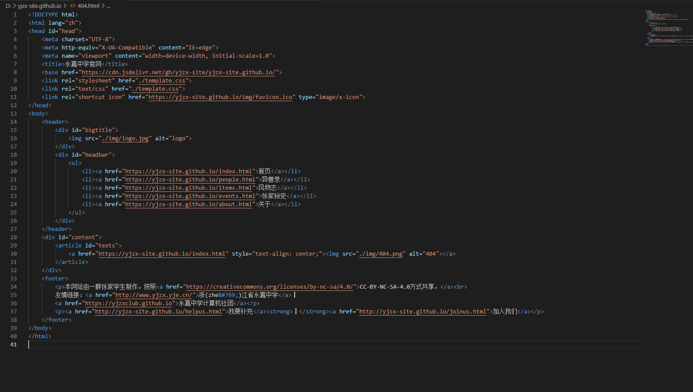

HTML：3——标签1
本文按照 Mozilla 贡献者基于 CC-BY-SA 2.5 协议发布的以下文章改编:
- https://developer.mozilla.org/zh-CN/docs/Learn/HTML/Introduction_to_HTML/Getting_started
- https://developer.mozilla.org/zh-CN/docs/Learn/Getting_started_with_the_web/HTML_basics
上回说到，我们新建了一个HTML文件并补全了一个基本框架。今天我们就要了解往<body>里塞点什么东西。
段落元素：<p>
1 | <p> |
显示效果：
百度公司已于2021年2月31日倒闭
如果持续亏损，腾讯将于2022年2月30日宣布破产
可以看出，<p>元素可以嵌套。它表示段落的开始，所以说如果你要写一篇小说，每一个自然段都可以用它括起来。
另外，第二行和第三行前面似乎有缩进。这并不是必须的，但是我们依然建议打。它可以直观地表明里面的两组<p></p>元素属于外层。这样就能方便阅读代码。打缩进的方式就是按键盘的Tab键。
比如说我们的yjzx-site的一个页面，像这样的缩进就是比较美观的。

行内元素和块级元素
我们看看这两组语句：
1 | <p>AMD YES!</p> <p>NVIDIA NO!</p> |
1 | <p>AMD YES!</p> |
显示结果是一样的，都是：
AMD YES!
NVIDIA NO!
下面这两组的显示效果也是一样的：
1 | <strong>LINUX YES!</strong> <strong>WINDOWS NO!</strong> |
1 | <strong>LINUX YES!</strong> |
它们显示起来都是：
LINUX YES!WINDOWS NO!
首先需要说明一点，可以看出，HTML显示的时候是否换行，不是根据你的文件里是否有换行决定的。那么为什么写<p>元素的时候，两段之间会有换行，写<strong>元素的时候就没有呢？<p>元素是块级元素，自成一块，所以会换行；而<strong>元素是内联元素（行内元素），不换行。块级元素内能包含文本、块级元素和内联元素，而内联元素里只能有文本或者内联元素。
比如这样的一句，因为<strong>是内联元素，<p>是块级元素，虽然它能渲染出你想要的样子（给里面的东西加强调），但是这是浏览器绞尽脑汁才理解出来的，这不太好。这样的写法是错误的。
1 | <strong> BAD!!! |
常见的内联元素有：
1 | <span>、<a>、<img>、<input>、<textarea>、<select>、<label>、<br>、<b>、<strong>、<sup> 、<sub>、<i>、<em>、<del>、<u> |
常见的块级元素有：
1 | <div>、<table>、<form>、<p>、<ul>、<h1>-<h6>、<hr>、<pre>、<address>、<blockquote> |
<hr>分割线与<br>换行
之前我们讲了<hr>元素是一个空元素，作用是形成分割线。而<br>元素也是空元素，它能形成换行。
举个例子：
1 | <p>我不知道！<br>我真的不知道！</p> |
效果就是：
我不知道！
我真的不知道！
当你认为在当前语境下需要换行，又不应该开一个新段落的时候，就可以使用<br>。
斜体、粗体和语义
之前我们说到，<strong>元素表示文本重要性，会让文本加粗。但是HTML里还有一个<b>元素，也能让文本加粗。还有：<em>让文本变成斜体，<i>也让文本斜体，还有一个<cite>也让文本变成斜体。那么为什么会有多个效果一样的标签呢？
在HTML的早期，只有<i>和<b>。然而在HTML后面的标准里加入了<strong>和<em>等。这强调的一点就是“语义”。
对于<em>、<cite>和<i>，默认情况下，它们的视觉效果是一样的。但语义是不同的。 <em> 标签表示其内容的着重强调，而 <i> 标签表示从正常散文中区分出的文本，例如外来词，虚构人物的思想，或者当文本指的是一个词语的定义，而不是其语义含义。（作品的标题，例如书籍或电影的名字，应该使用 <cite>。）
这意味着，正确使用哪一个取决于具体的场景。两者都不是纯粹为了装饰的目的，那是CSS样式所做的。
一个 <em> 的例子可能是：”Just do it already!”，或：”We had to do something about it”。人或软件在阅读文本时，会对斜体字的发音使用重读强调。
一个 <i> 的例子可能是：”The Queen Mary sailed last night”。在这里，没有对 “Queen Mary” 这个词添加强调或重要性。它只是表明，谈论的对象不是一个名叫玛丽的女王，而是一艘名字叫玛丽的船。另一个 <i> 的例子可能是：”The word the is an article”。
另外，“em”是“emphasis”（强调）的缩写。
同理，<strong>表示文本的重要性；而<b>只是加粗。
strong是一个逻辑状态，而bold是一个物理状态。逻辑状态分离内容和表现形式，使用逻辑状态允许你用各种不同的方式来表达。比如你想把文字渲染成红色，使用其它大小的字体、带有下划线或其他样式，而不是加粗的样式。必须要理解使用strong呈现出的表现形式不同于单纯的加粗。 因为bold是一个物理状态，他没有区分表现形式和内容。如果让bold做了加粗文本外的其它任何事情，都将会令人困惑而且也不符合逻辑。
同样应该注意<b></b> 还有其他用途，比如想单纯地吸引注意而不增加其重要性。
上面引用的那一段看不懂就算了。总之：如果斜体是有强调意义的，应该使用<em>；如果为表示作品的标题而斜体，应该使用<cite>；如果既不是作品也不是强调，才应该用<i>。同样：如果加粗是说明重要性的，应该使用<strong>；如果情况不适合用<strong>（即没有重要性的含义），再使用<b>。
那么<em>和<strong>又有什么区别呢？
在 HTML4 时， Strong 简单地表示一个更强的强调(emphasis)，而在HTML5中，这个元素被描述为表征“内容强烈的重要性(strong importance for its contents) ”。这是一个重要的区别。Em标签(Emphasis)用于改变一个句子的意思(比如”我<em>喜欢</em>胡萝卜” 和”我喜欢<em>胡萝卜</em>”，分别强调喜欢和胡萝卜), Strong用来对一个句子的部分增加重要性(比如 “警告! 这非常危险。”) Strong和Emphasis都可以分别通过嵌套来增加相对重要性或强调重点。
看不懂就算了，我也不想看懂。
可是为什么要区别这些元素呢？其一，使用CSS渲染后，它可能会有不同的显示效果（是否不同取决于CSS写了什么）；对于搜索引擎和浏览器，明确的语义可以更好地组织数据；对于使用屏幕阅读器（一种朗读网页的程序）的视障患者，屏幕阅读器能更好地处理重读，让他们更好地理解网页。
HTML5尤其注重语义，我们之后会学习很多语义化的元素，许多都是HTML5新加的。
标题
Markdown有6级标题，HTML也一样。使用方法是<h1>~`
`包围标题内容。上示例：
1
2
3
4
5
6
<h1>我是一个教程</h1>
<h2>我是第一个副标题</h2>
<p>教程的第一段</p>
<h2>我也是副标题</h2>
<p>教程的第二段</p>
<p>教程的第三段</p>
1 | <h1>我是一个教程</h1> |
显示效果：
我是一个教程
我是第一个副标题
教程的第一段
我也是副标题
教程的第二段
教程的第三段
其他的也没什么好讲的。但是请注意：<h1>~`
`的元素也是有语义的，它就表示标题，不能是别的。如果单纯为了增大字号而使用标题元素，是完全错误的。比如这样子，就是错误的：
1
2
3
4
5
<p>华强：你这瓜保熟吗？</p>
<p>老板：我开水果摊的，能卖给你生瓜蛋子？</p>
<p>华强：我问你这瓜保熟吗？</p>
<h2>老板：你是故意找茬，是不是？你要不要吧！</h2> BAD!!!
<p>华强：你这瓜要是熟我肯定要啊</p>
1 | <p>华强：你这瓜保熟吗？</p> |
虽然老板的话被放大了（也许这是你想要的），但是它不符合语义。搜索引擎可能会把它当做小标题，显示在搜索页上，忽略掉前后的部分，于是你的网站在搜索引擎上的预览会变得很奇怪。如果要改字号，请使用我们后面讲的CSS。
图像元素：<img>
之前讲过，<img>元素可以显示一张图片。现在好好讲一讲它。
1 | <img src="https://yjzx-site.github.io/img/club-file/scissor-seven-picture.jpg" alt="一张伍六七的图片" width="960px" height="540px"> |
由于GCVillager是__________，所以这里还是放那张__________。
首先回顾一下，src、alt等都是属性，用空格分隔。属性值最好用引号括起来，否则可能出错（单双引号都可以，但是前后必须一致。比如说，alt="一张伍六七的图片'就是错误的，浏览器可能无法理解。）接着我们来了解一下各个属性。
src
src是source的缩写，很好理解，就是图片的链接。链接可以是相对路径，也可以是绝对路径。举个例子，“我们机房隔壁是广播室”，这就是相对路径；而“广播室在浙江省永嘉县永嘉中学图书馆4楼四零几室”就是绝对路径。
比如说，假设scissor-seven-picture.jpg和你的HTML在同一个路径下（也就是同一个文件夹内），你的src就可以直接写scissor-seven-picture.jpg。
那要是这个文件在一个叫img的文件夹内，而img和你的网页同目录（文件夹）（如下图）呢？
1 | --html（文件夹） |
那就输入img/scissor-seven-picture.jpg。
上面这两个就属于相对路径表示法。而像https://yjzx-site.github.io/img/club-file/scissor-seven-picture.jpg这样的路径就是绝对路径。可以这么说：最前面写了https:// 和域名的就是绝对路径，如果没有写，那就是相对路径。
在相对路径表示法里，还有.和..。.代表当前路径，所以./a.png和a.png代表的是同一个东西。..代表上层目录，比如说你的某个文件是https://amdyes.net/docs/index.html，同路径下有一个a.png，那么对index.html来说，a.png和../docs/a.png是同一个文件。
使用怎样的表示法，看具体情况。比如你的网站结构里，这些东西可能就是在同一个路径下的，那使用相对路径会比较方便，而且如果你换了自己网站的域名，也不容易出现图片无法显示的问题（比如说，你的网站叫yjzx.club，后来换成了yjzx.com，因为你的图片链接原先是https://yjzx.club/a.png，就会出现找不到图片的情况；但是相对路径就不会）；如果你的图片在别的网站上，那就必须用绝对路径。
alt
如果因为图片炸了，或者是视障人员，就需要使用alt属性。如果写了alt="一张伍六七的图片"，并且图片炸了（比如说我们倒闭了），就会显示alt里的内容，而如果能够显示图片，就不会显示alt的内容。但是使用屏幕阅读器的人可能需要听alt里的内容。
图片加载不出来就会这样：
为了让人在看不见图片的情况下就能了解内容，应该讲内容写成描述性文本。比如说，其实这里不应该写“一张伍六七的图片”，最好写成“伍六七和梅花十三坐在庙里”。
width height
width="960px" height="540px"的意思就是讲图片的宽度定为960像素（pixel），高度定为540像素。
像素是什么？假设有一张画，你将它分割成很多个很小的格子，然后用一种颜色概括一个格子；在另一张一样的纸上画一样的网格，把刚刚用来概括的颜色填到相应的格子里，稍微远一点的地方看，两张画理论上是差不多的。这种小格子就是像素。1像素是边长0.04cm的正方形小格子，图片分辨率是1920*1080，意思就是有1920乘1080个像素。分辨率越高，图片越清晰。
浏览器显示的时候，会按照图片分辨率显示。有时候，图片可能对你的要求来说太大了，或者太小了，或者你想要把图片压扁，就可以使用witdh和height。
链接元素：<a>
<a>元素就是链接元素。它可以添加一个超链接。“a”是“anchor”（锚）的缩写。下面是<a>元素的模板：
1 | <a href="某个网址">一些文本</a> |
比如说我想要在某个页面中链接到我们的博客，显示如下的效果（超链接可点）：
欢迎访问我们的博客以获取更多信息。
就应该这么写：
1 | <p>欢迎访问<a href="https://yjzxclub.github.io">我们的博客</a>以获取更多的信息。</p> |
另外，href是超文本引用（ hypertext reference）的缩写。